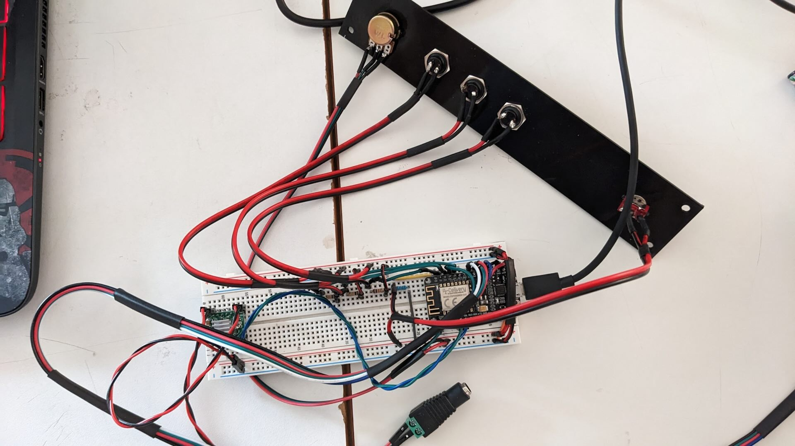
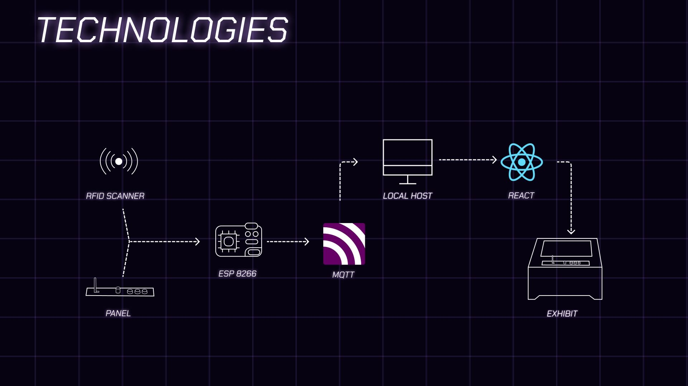
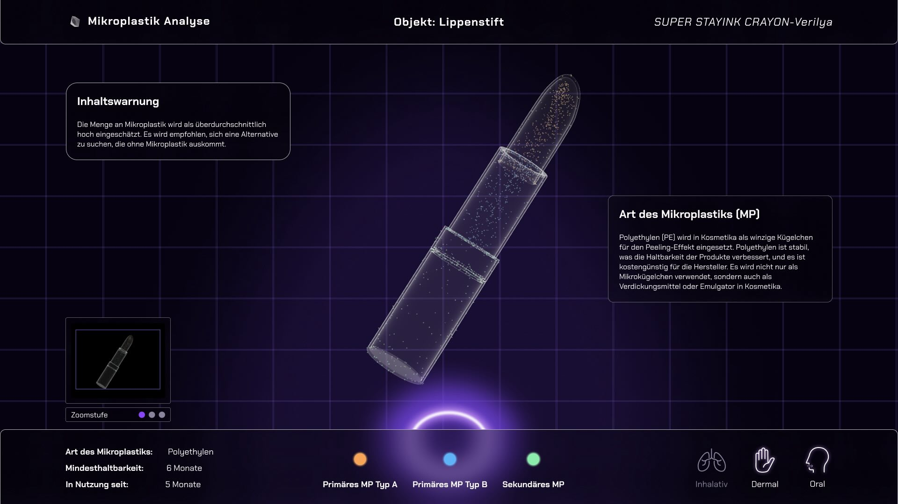

Semester
Summer Semester 2023
Summer Semester 2023
Group Members
Evelin Gariung, Karl Endepols, Philipp Däschle
Evelin Gariung, Karl Endepols, Philipp Däschle
Personal contribution
Programming of the Application Frontend & Backend, Hardware prototyping, 3D construction, 3D Printing, Conceptualization
Programming of the Application Frontend & Backend, Hardware prototyping, 3D construction, 3D Printing, Conceptualization
Description
In collaboration with Aalen University, our "Lean Design Project" course has led to the creation of an interactive exhibit focusing on microplastics in everyday items. The exhibit, designed for the German Plastics Museum, is mobile and easily transportable.
Our exhibit, inspired by a luggage scanner, allows visitors to 'scan' everyday objects like chewing gum, lipstick, and masks to reveal and highlight the microplastics within them. These objects, often not suspected of containing microplastics, are presented in a way that educates about their presence and the potential for human body absorption.
Visitors use a lever to move the conveyor belt, selecting objects of interest. With a potentiometer, they can zoom into the objects, revealing more detailed information about the microplastics. Additionally, buttons provide further details on different types of microplastics.
This project aims to shed light on the hidden world of microplastics in common items, encouraging visitors to explore and discover how these tiny particles are a part of our daily lives.
In collaboration with Aalen University, our "Lean Design Project" course has led to the creation of an interactive exhibit focusing on microplastics in everyday items. The exhibit, designed for the German Plastics Museum, is mobile and easily transportable.
Our exhibit, inspired by a luggage scanner, allows visitors to 'scan' everyday objects like chewing gum, lipstick, and masks to reveal and highlight the microplastics within them. These objects, often not suspected of containing microplastics, are presented in a way that educates about their presence and the potential for human body absorption.
Visitors use a lever to move the conveyor belt, selecting objects of interest. With a potentiometer, they can zoom into the objects, revealing more detailed information about the microplastics. Additionally, buttons provide further details on different types of microplastics.
This project aims to shed light on the hidden world of microplastics in common items, encouraging visitors to explore and discover how these tiny particles are a part of our daily lives.
VISUALS




